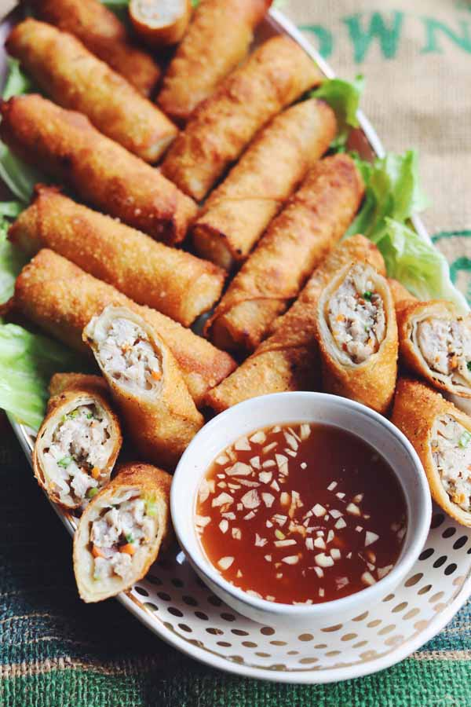

Eggroll Recipe

Description
Egg Rolls, also known as Cha Gio, are the perfect finger food appetizer.
Traditionally, ground pork gets mixed with fragrant
spices and colorful vegetables then wrapped in egg roll wrappers.
They're then deep fried until golden brown.
I recommend serving this adapted recipe with Nuoc Cham, which is a sweet and sour fish sauce.
Ingredients
- ground pork
- red onion
- carrots
- scallions
- garlic
- lemongrass paste
- salt
- pepper
- sugar
- egg white
- egg roll wrappers
- vegetable oil or another neutral oil
Steps
Making the Meat Mixture
- In a large bowl, combine ground pork, diced red onion, carrots, scallions, garlic, and lemon grass
paste.
Add salt, pepper, and sugar and mix the meat together until everything is evenly incorporated.
- In another small bowl, whisk egg white and set aside.
Rolling the Egg Rolls
- Take one egg roll wrapper and place it on a cutting board in a diamond position.
- Fold one corner ¼ way inward and place 1 tbsp of the pork mixture on top.
- Shape the mixture into a log and fold both of the sides of the wrapper inward.
- Brush the top half of the egg roll wrapper with egg wash and tightly wrap the egg roll.
- Repeat with all the wrappers and set egg rolls aside.
- Choose how many you'd like to prepare and place the rest in a freezer safe ziplock bag.
Frying the Egg Rolls
- When you're ready to prepare them, pour the oil into a deep large pot and turn the heat to medium
medium-low.
- Once the oil gets to 350F degrees, it's time to fry the egg rolls.
- Divide the egg rolls into batches and fry 5 of them at a time, 4 times for 6-9 minutes each.
- After about 6 minutes, the egg rolls should be golden brown and the center should be cooked through.
- Be sure to cut one in half to make sure it's not raw in the middle.
- Once they're done being fried, set them on a paper towel to dry and crisp up.
- Let them rest for a few minutes before serving.
Back To Homepage